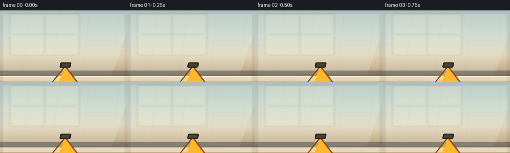
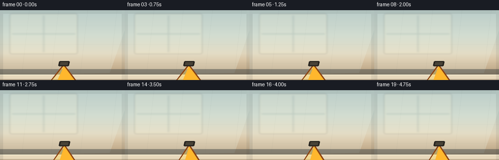
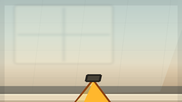
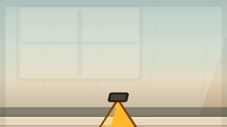

CODING AGENTS AS PIXEL WORLD MODELS
traex/DeepSeek-V4.1-Flash · mechanics_0019
点击播放 · 原生 RGB 像素
此结果可播放，但该运行尚未通过最终提交审核。页面展示不代表评测通过。
逐轮保存的候选
回放视频、检查图与代码变化。
每份候选均可单独播放。实际图片检查记录在下方工具轨迹中。
候选 01播放与检查图
点击播放 · 原生 RGB 像素


展开代码变化
--- 上一保存版本
+++ 本次保存版本
@@ -0,0 +1,393 @@
+from pathlib import Path
+import math
+
+import numpy as np
+from PIL import Image, ImageDraw, ImageFilter, ImageFont
+
+from artifact_io import save
+
+
+CASE_DIR = Path(__file__).resolve().parent
+W, H, N = 256, 144, 20
+SS = 4
+FW, FH = W * SS, 768
+FPS = 4.0
+
+
+def lerp(a, b, t):
+ return a + (b - a) * t
+
+
+def smoothstep(a, b, x):
+ t = np.clip((x - a) / (b - a), 0.0, 1.0)
+ return t * t * (3.0 - 2.0 * t)
+
+
+def ease(t):
+ return t * t * (3.0 - 2.0 * t)
+
+
+def rounded_rect_mask(size, box, radius):
+ layer = Image.new("L", size)
+ draw = ImageDraw.Draw(layer)
+ draw.rounded_rectangle(box, radius=radius, fill=255)
+ return layer
+
+
+def poly_mask(size, points):
+ layer = Image.new("L", size)
+ ImageDraw.Draw(layer).polygon(points, fill=255)
+ return layer
+
+
+def paste_masked(base, image, mask, offset=(0, 0)):
+ base.paste(image, offset, mask)
+
+
+def vertical_gradient(size, stops):
+ w, h = size
+ ys = np.linspace(0.0, 1.0, h, dtype=np.float32)
+ colors = np.zeros((h, 3), dtype=np.float32)
+ for i in range(len(stops) - 1):
+ p0, c0 = stops[i]
+ p1, c1 = stops[i + 1]
+ m = (ys >= p0) & (ys <= p1)
+ if not np.any(m):
+ continue
+ q = (ys[m] - p0) / max(p1 - p0, 1e-6)
+ q = q[:, None]
+ colors[m] = np.array(c0)[None, :] * (1 - q) + np.array(c1)[None, :] * q
+ arr = np.repeat(colors[:, None, :], w, axis=1).astype(np.uint8)
+ return Image.fromarray(arr, "RGB")
+
+
+def make_background():
+ bg = vertical_gradient((FW, FH), [
+ (0.00, (170, 193, 193)),
+ (0.36, (201, 214, 203)),
+ (0.62, (224, 213, 188)),
+ (0.70, (218, 199, 168)),
+ (1.00, (169, 144, 113)),
+ ])
+ d = ImageDraw.Draw(bg, "RGBA")
+
+ # Soft kitchen wall shadows and tiled seams, kept low-contrast behind the action.
+ d.polygon([(0, 0), (1080, 0), (900, 690), (0, 720)], fill=(236, 240, 225, 65))
+ d.rectangle((0, 690, FW, 760), fill=(150, 125, 96, 35))
+ for x in range(0, FW, 240):
+ d.line((x, 0, x - 60, 690), fill=(90, 108, 102, 16), width=3)
+ for y in (172, 378, 586):
+ d.line((0, y, FW, y), fill=(95, 111, 102, 18), width=3)
+
+ # Warm window light on the wall.
+ glow = Image.new("RGBA", (FW, FH), (0, 0, 0, 0))
+ gd = ImageDraw.Draw(glow)
+ gd.rounded_rectangle((80, 40, 635, 480), radius=16, fill=(255, 244, 207, 42))
+ gd.rectangle((98, 58, 618, 462), fill=(255, 247, 218, 38))
+ gd.line((358, 58, 358, 462), fill=(113, 131, 125, 45), width=12)
+ gd.line((98, 260, 618, 260), fill=(113, 131, 125, 45), width=12)
+ glow = glow.filter(ImageFilter.GaussianBlur(8))
+ bg.alpha_composite(glow) if bg.mode == "RGBA" else bg.paste(glow, (0, 0), glow)
+
+ # Countertop: stone face, bevel, and a thin back lip.
+ d = ImageDraw.Draw(bg, "RGBA")
+ d.rectangle((0, 648, FW, 714), fill=(68, 73, 71, 130))
+ d.rectangle((0, 710, FW, 765), fill=(231, 216, 188, 255))
+ d.rectangle((0, 765, FW, FH), fill=(201, 178, 144, 255))
+ d.line((0, 711, FW, 711), fill=(255, 246, 218, 230), width=8)
+ d.line((0, 760, FW, 760), fill=(134, 113, 87, 170), width=5)
+ for y in range(785, FH, 34):
+ d.line((0, y, FW, y), fill=(145, 122, 94, 40), width=2)
+ for x in range(80, FW, 190):
+ d.line((x, 770, x + 20, FH), fill=(148, 126, 98, 30), width=2)
+
+ # A few countertop crumbs and reflections add material texture.
+ rng = np.random.default_rng(4)
+ return bg
+
+
+def draw_carton(size, squeeze, tilt, phase):
+ """A flat-shaded, slightly bowed juice carton with a readable orange label."""
+ layer = Image.new("RGBA", size, (0, 0, 0, 0))
+ d = ImageDraw.Draw(layer, "RGBA")
+
+ cx = 132 * SS
+ base = 690 * SS
+ top = 202 * SS
+ half_w = (55 - 10 * squeeze) * SS
+ shoulder_w = (39 - 8 * squeeze) * SS
+ lean = tilt * SS
+ bow = squeeze * 7 * SS
+
+ left = cx - half_w
+ right = cx + half_w
+ top_left = cx - shoulder_w + lean
+ top_right = cx + shoulder_w + lean
+
+ # Rear edge and side face create depth before the front panel is painted.
+ rear = [
+ (right - 5 * SS, top + 13 * SS),
+ (right + 21 * SS, top + 26 * SS),
+ (right + 21 * SS, base - 5 * SS),
+ (right - 5 * SS, base),
+ ]
+ d.polygon(rear, fill=(183, 76, 29, 255))
+ d.line(rear + [rear[0]], fill=(107, 43, 21, 255), width=3 * SS, joint="curve")
+
+ # Front carton body: the bowed left and right edges visibly give under the hand.
+ front = [
+ (top_left, top + 14 * SS),
+ (top_right, top + 14 * SS),
+ (right + 2 * SS, 530 * SS),
+ (right + bow, base),
+ (left - bow * 0.25, base),
+ (left - 2 * SS, 530 * SS),
+ ]
+ d.polygon(front, fill=(247, 137, 29, 255))
+ d.line(front + [front[0]], fill=(126, 55, 18, 255), width=3 * SS, joint="curve")
+
+ # Gable roof.
+ roof_peak = (cx + lean * 0.6, top - 52 * SS)
+ roof = [
+ (top_left, top + 15 * SS),
+ roof_peak,
+ (top_right, top + 15 * SS),
+ ]
+ d.polygon(roof, fill=(255, 183, 45, 255))
+ d.line(roof + [roof[0]], fill=(140, 67, 19, 255), width=3 * SS, joint="curve")
+ d.polygon([(top_left, top + 15 * SS), (roof_peak[0], roof_peak[1] + 4 * SS),
+ (top_left + 18 * SS, top + 15 * SS)], fill=(255, 213, 92, 110))
+
+ # Carton cap.
+ cap = [
+ (roof_peak[0] - 8 * SS, roof_peak[1] - 9 * SS),
+ (roof_peak[0] + 11 * SS, roof_peak[1] - 9 * SS),
+ (roof_peak[0] + 9 * SS, roof_peak[1] + 3 * SS),
+ (roof_peak[0] - 10 * SS, roof_peak[1] + 3 * SS),
+ ]
+ d.polygon(cap, fill=(72, 66, 55, 255))
+ d.line(cap + [cap[0]], fill=(38, 35, 30, 255), width=3 * SS)
+
+ # White label block, slightly trapezoidal to sit on the carton face.
+ label = [
+ (left + 6 * SS, 330 * SS),
+ (right - 6 * SS, 330 * SS),
+ (right - 2 * SS, 541 * SS),
+ (left + 2 * SS, 541 * SS),
+ ]
+ d.polygon(label, fill=(255, 249, 225, 255))
+ d.line(label + [label[0]], fill=(231, 194, 138, 255), width=2 * SS)
+ d.ellipse((cx - 36 * SS, 344 * SS, cx + 36 * SS, 419 * SS),
+ fill=(242, 117, 22, 255), outline=(210, 75, 17, 255), width=2 * SS)
+ d.ellipse((cx - 25 * SS, 354 * SS, cx + 25 * SS, 407 * SS), fill=(255, 177, 40, 255))
+
+ font_big = ImageFont.truetype("/usr/share/fonts/truetype/dejavu/DejaVuSans-Bold.ttf", 23 * SS)
+ font_small = ImageFont.truetype("/usr/share/fonts/truetype/dejavu/DejaVuSans-Bold.ttf", 12 * SS)
+ font_tiny = ImageFont.truetype("/usr/share/fonts/truetype/dejavu/DejaVuSans-Bold.ttf", 7 * SS)
+ d.text((cx, 382 * SS), "SUNNY", font=font_big, anchor="mm", fill=(255, 248, 215, 255))
+ d.text((cx, 434 * SS), "ORANGE", font=font_small, anchor="mm", fill=(190, 80, 20, 255))
+ d.text((cx, 458 * SS), "JUICE", font=font_small, anchor="mm", fill=(190, 80, 20, 255))
+ d.text((cx, 485 * SS), "100% FRUIT", font=font_tiny, anchor="mm", fill=(119, 92, 57, 255))
+
+ # A small fruit illustration on the label.
+ ox, oy = cx + 1 * SS, 514 * SS
+ d.ellipse((ox - 12 * SS, oy - 12 * SS, ox + 12 * SS, oy + 12 * SS),
+ fill=(255, 175, 31, 255), outline=(220, 113, 20, 255), width=2 * SS)
+ for a in range(8):
+ ang = math.radians(a * 45 + 8)
+ x1 = ox + math.cos(ang) * 4 * SS
+ y1 = oy + math.sin(ang) * 4 * SS
+ x2 = ox + math.cos(ang) * 10 * SS
+ y2 = oy + math.sin(ang) * 10 * SS
+ d.line((x1, y1, x2, y2), fill=(255, 239, 142, 255), width=1 * SS)
+ d.ellipse((ox + 6 * SS, oy - 15 * SS, ox + 17 * SS, oy - 8 * SS), fill=(83, 134, 61, 255))
+
+ # Fold/compression creases. Their strength rises with the squeeze.
+ crease_alpha = int(45 + 95 * squeeze)
+ d.line((left + 7 * SS, 302 * SS, cx - 15 * SS, 310 * SS),
+ fill=(150, 64, 20, crease_alpha), width=3 * SS)
+ d.line((right - 7 * SS, 302 * SS, cx + 17 * SS, 310 * SS),
+ fill=(150, 64, 20, crease_alpha), width=3 * SS)
+ if squeeze > 0.35:
+ for off in (-10, 10):
+ d.arc((cx + off * SS - 17 * SS, 285 * SS, cx + off * SS + 17 * SS, 327 * SS),
+ 205, 335, fill=(117, 46, 16, int(80 * squeeze)), width=2 * SS)
+
+ # Narrow highlights along the left and right folded panels.
+ d.polygon([(left + 2 * SS, 304 * SS), (left + 12 * SS, 309 * SS),
+ (left + 8 * SS, 684 * SS), (left + 1 * SS, 684 * SS)],
+ fill=(255, 225, 144, 90))
+ d.polygon([(right - 8 * SS, 310 * SS), (right - 1 * SS, 305 * SS),
+ (right - 1 * SS, 684 * SS), (right - 5 * SS, 684 * SS)],
+ fill=(146, 58, 20, 52))
+
+ # Ground contact shadow.
+ d.ellipse((left - 26 * SS, base - 7 * SS, right + 29 * SS, base + 9 * SS),
+ fill=(68, 50, 33, 72))
+ return layer
+
+
+def capsule(draw, p0, p1, r, fill, outline=None, width=1):
+ x0, y0 = p0
+ x1, y1 = p1
+ draw.line((x0, y0, x1, y1), fill=fill, width=int(2 * r))
+ draw.ellipse((x0 - r, y0 - r, x0 + r, y0 + r), fill=fill)
+ draw.ellipse((x1 - r, y1 - r, x1 + r, y1 + r), fill=fill)
+ if outline:
+ draw.line((x0, y0, x1, y1), fill=outline, width=max(1, width))
+
+
+def draw_hand(size, squeeze, phase):
+ """A right hand enters from the right, fingers wrapping the carton."""
+ layer = Image.new("RGBA", size, (0, 0, 0, 0))
+ d = ImageDraw.Draw(layer, "RGBA")
+ skin = (188, 108, 74, 255)
+ skin_light = (221, 146, 106, 255)
+ skin_dark = (126, 65, 51, 255)
+ nail = (235, 178, 151, 255)
+
+ # Forearm and palm, angled down from the right edge.
+ capsule(d, (946 * SS, 337 * SS), (785 * SS, 363 * SS), 48 * SS, skin_dark)
+ capsule(d, (946 * SS, 331 * SS), (792 * SS, 352 * SS), 40 * SS, skin)
+ palm = [
+ (780 * SS, 300 * SS), (843 * SS, 289 * SS), (890 * SS, 332 * SS),
+ (874 * SS, 407 * SS), (794 * SS, 417 * SS), (755 * SS, 371 * SS),
+ ]
+ d.polygon(palm, fill=skin)
+ d.line(palm + [palm[0]], fill=skin_dark, width=3 * SS, joint="curve")
+ d.ellipse((775 * SS, 321 * SS, 844 * SS, 391 * SS), fill=skin_light)
+
+ # Four fingers curl around the front, their tips visibly pressing into the panel.
+ finger_specs = [
+ ((818, 285), (731, 300), (690, 339), 19),
+ ((824, 330), (732, 342), (690, 369), 19),
+ ((823, 374), (737, 386), (695, 408), 18),
+ ((811, 414), (745, 427), (708, 446), 16),
+ ]
+ for i, (a, b, c, r) in enumerate(finger_specs):
+ ax, ay = a
+ bx, by = b
+ cx, cy = c
+ # The middle fingers press inward more than the index and pinky.
+ press = (0.55 if i in (1, 2) else 0.25) * squeeze
+ bx -= press * 8
+ cx -= press * 16
+ by += math.sin(phase + i) * 0.8
+ capsule(d, (ax * SS, ay * SS), (bx * SS, by * SS), r * SS, skin_dark)
+ capsule(d, (ax * SS, (ay - 3) * SS), (bx * SS, (by - 3) * SS), (r - 3) * SS, skin)
+ capsule(d, (bx * SS, by * SS), (cx * SS, cy * SS), (r - 2) * SS, skin)
+ d.ellipse(((cx - r + 3) * SS, (cy - r + 3) * SS,
+ (cx + r - 3) * SS, (cy + r - 3) * SS), fill=skin_light)
+ d.ellipse(((cx - 7) * SS, (cy - 5) * SS,
+ (cx + 7) * SS, (cy + 6) * SS), fill=nail)
+ # Knuckle and tip shadows.
+ d.arc(((bx - r + 2) * SS, (by - r) * SS, (bx + r - 2) * SS, (by + r) * SS),
+ 90, 280, fill=skin_dark, width=2 * SS)
+ d.arc(((cx - r + 3) * SS, (cy - r + 2) * SS,
+ (cx + r - 3) * SS, (cy + r) * SS),
+ 100, 330, fill=(147, 76, 57, 160), width=2 * SS)
+
+ # Thumb crosses over the top-left of the grip.
+ tx0, ty0 = 802, 292
+ tx1, ty1 = 729, 257
+ tx2, ty2 = 684, 276
+ capsule(d, (tx0 * SS, ty0 * SS), (tx1 * SS, ty1 * SS), 27 * SS, skin_dark)
+ capsule(d, (tx0 * SS, (ty0 - 3) * SS), (tx1 * SS, (ty1 - 3) * SS), 23 * SS, skin)
+ capsule(d, (tx1 * SS, ty1 * SS), (tx2 * SS, ty2 * SS), 21 * SS, skin_light)
+ d.ellipse(((tx2 - 20) * SS, (ty2 - 14) * SS, (tx2 + 5) * SS, (ty2 + 16) * SS),
+ fill=skin_light)
+ d.ellipse(((tx2 - 15) * SS, (ty2 - 7) * SS, (tx2 - 2) * SS, (ty2 + 5) * SS),
+ fill=nail)
+ d.arc(((tx1 - 26) * SS, (ty1 - 23) * SS, (tx1 + 26) * SS, (ty1 + 24) * SS),
+ 95, 270, fill=skin_dark, width=2 * SS)
+
+ # Wrist crease and a soft highlight.
+ d.arc((850 * SS, 320 * SS, 918 * SS, 394 * SS), 75, 215,
+ fill=(146, 73, 51, 170), width=2 * SS)
+ d.line((869 * SS, 344 * SS, 921 * SS, 331 * SS), fill=(235, 168, 126, 80), width=3 * SS)
+ return layer
+
+
+def draw_splash(size, intensity, phase):
+ layer = Image.new("RGBA", size, (0, 0, 0, 0))
+ d = ImageDraw.Draw(layer, "RGBA")
+ if intensity <= 0:
+ return layer
+
+ # Small orange beads driven out of the upper-right carton seam.
+ origin = (194 * SS, 291 * SS)
+ rng = np.random.default_rng(28)
+ for i in range(15):
+ a = -0.85 + rng.uniform(-0.35, 0.30)
+ speed = rng.uniform(14, 45) * intensity
+ travel = 9 + 24 * intensity
+ x = origin[0] + math.cos(a) * travel * rng.uniform(0.55, 1.15) * SS
+ y = origin[1] + math.sin(a) * travel * rng.uniform(0.5, 1.15) * SS
+ rad = rng.uniform(1.6, 4.5) * SS
+ d.ellipse((x - rad, y - rad * 0.7, x + rad, y + rad * 0.7),
+ fill=(255, 137, 21, 235))
+ d.ellipse((x - rad * 0.5, y - rad * 0.45, x + rad * 0.15, y + rad * 0.08),
+ fill=(255, 207, 72, 190))
+
+ # Main spray stream, curving up and to the right.
+ stream = [(199, 292), (211, 273), (223, 253), (239, 235), (252, 226)]
+ for i, (x, y) in enumerate(stream):
+ rr = (3.5 - i * 0.45) * SS * max(0.45, intensity)
+ yy = (y + math.sin(phase + i * 0.7) * 2) * SS
+ d.ellipse((x * SS - rr, yy - rr, x * SS + rr, yy + rr),
+ fill=(255, 127 + i * 5, 17, int(170 + 45 * intensity)))
+ d.line((origin[0], origin[1], 222 * SS, 257 * SS),
+ fill=(255, 172, 35, int(140 * intensity)), width=3 * SS)
+ return layer
+
+
+def draw_steam_and_ambient(frame):
+ overlay = Image.new("RGBA", frame.size, (0, 0, 0, 0))
+ d = ImageDraw.Draw(overlay, "RGBA")
+ # Faint juice droplets remain visible at the very end.
+ for i, (x, y, r) in enumerate([(242, 225, 2), (226, 243, 1), (211, 268, 1)]):
+ d.ellipse((x * SS - r * SS, y * SS - r * SS,
+ x * SS + r * SS, y * SS + r * SS), fill=(255, 148, 26, 180))
+ # Slight vignette, kept warm and gentle.
+ vignette = Image.new("RGBA", frame.size, (0, 0, 0, 0))
+ vd = ImageDraw.Draw(vignette)
+ vd.rectangle((0, 0, FW, 40), fill=(25, 34, 34, 20))
+ vd.rectangle((0, 0, 25, FH), fill=(25, 34, 34, 22))
+ vd.rectangle((FW - 25, 0, FW, FH), fill=(25, 34, 34, 18))
+ overlay.alpha_composite(vignette)
+ return overlay
+
+
+def render():
+ bg = make_background()
+ frames = []
+ for i in range(N):
+ t = i / (N - 1)
+ # Slow anticipation, firm middle, and a final peak squeeze.
+ squeeze = float(0.05 + 0.84 * smoothstep(0.08, 0.92, t) + 0.08 * math.sin(math.pi * t))
+ squeeze = min(squeeze, 1.0)
+ tilt = -2.0 + 3.5 * t + math.sin(t * math.pi * 2.0) * 0.5
+ phase = i * 0.65
+
+ frame = bg.copy()
+ carton = draw_carton((FW, FH), squeeze, tilt, phase)
+ hand = draw_hand((FW, FH), squeeze, phase)
+ frame.alpha_composite(carton) if frame.mode == "RGBA" else frame.paste(carton, (0, 0), carton)
+ frame.paste(hand, (0, 0), hand)
+
+ splash_amount = float(smoothstep(0.55, 0.90, t) * (1.0 - 0.28 * smoothstep(0.90, 1.0, t)))
+ splash = draw_splash((FW, FH), splash_amount, phase)
+ frame.paste(splash, (0, 0), splash)
+ ambient = draw_steam_and_ambient(frame)
+ frame.paste(ambient, (0, 0), ambient)
+
+ # High-resolution render, then Lanczos downsample for anti-aliased edges.
+ small = frame.convert("RGB").resize((W, H), Image.Resampling.LANCZOS)
+ frames.append(np.asarray(small, dtype=np.uint8))
+ return np.stack(frames)
+
+
+if __name__ == "__main__":
+ frames = render()
+ save(frames, CASE_DIR)
+ print(f"saved {len(frames)} frames to {CASE_DIR}")
可观测工具轨迹
实际执行的命令与返回图片。
命令 1exit 0
/bin/bash -c "pwd && rg --files -g 'prompt.txt' -g 'GENERATION_RULES.md' -g 'task_spec.json' -g '"'!node_modules'"'"
命令 2exit 0
/bin/bash -c 'ls -la'
命令 3exit 0
/bin/bash -c 'cat prompt.txt'
命令 4exit 0
/bin/bash -c 'cat GENERATION_RULES.md'
命令 5exit 0
/bin/bash -c 'cat task_spec.json'
命令 6exit 0
/bin/bash -c "sed -n '1,240p' artifact_io.py"
命令 7exit 0
/bin/bash -c "python - <<'PY'
from PIL import Image
import PIL, numpy
print('Pillow', PIL.__version__, 'numpy', numpy.__version__)
PY"命令 8exit 0
/bin/bash -c "fc-list | rg -i 'DejaVuSans-Bold|LiberationSans-Bold' | head -5"
命令 9exit 1
/bin/bash -c 'python generate.py'
命令 10exit 0
/bin/bash -c "nl -ba generate.py | sed -n '62,118p'"
命令 11exit 1
/bin/bash -c 'python generate.py'
命令 12exit 1
/bin/bash -c 'python generate.py'
命令 13exit 0
/bin/bash -c 'python generate.py'
命令 14exit 0
/bin/bash -c "python - <<'PY'
from PIL import Image
im=Image.open('inspection.png')
print(im.size)
PY"视觉工具实际返回图片 1

视觉工具实际返回图片 2

视觉工具实际返回图片 3

保存候选 1 份；完成命令 14 次；可验证图片返回 3 张。原始 API 响应与完整日志保留在本地。